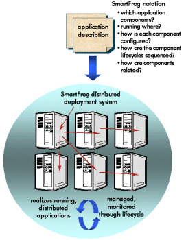

Welcome to SmartFrog
SmartFrog is a technology for describing distributed software systems as collections of cooperating components, and then activating and managing them. It was developed at HP Labs in Bristol, in the UK. The core SmartFrog framework is released under LGPL.
SmartFrog project development is hosted on Sourceforge:
Project development web site: http://sourceforge.net/projects/smartfrog
Package downloads: downloads page.
SmartFrog consists of a language for describing component collections and component configuration parameters, and a runtime environment which activates and manages the components to deliver and maintain running systems.

SmartFrog
has wide applicability across domains ranging from utility computing
to large-scale system configuration.
SmartFrog is a framework to build from, not a packaged solution. Typically, we write new components for each new service, and then use SmartFrog to describe and activate them. However, the framework is populated with a number of general purpose components that can be reused across services, and we are adding to their number.
SmartFrog and its components are implemented in Java ™, though SmartFrog components can easily be written to encapsulate software components based on other technologies.